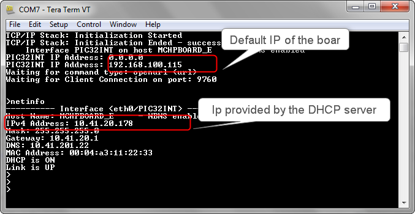
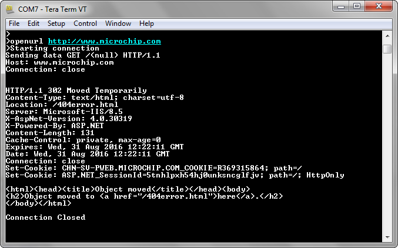
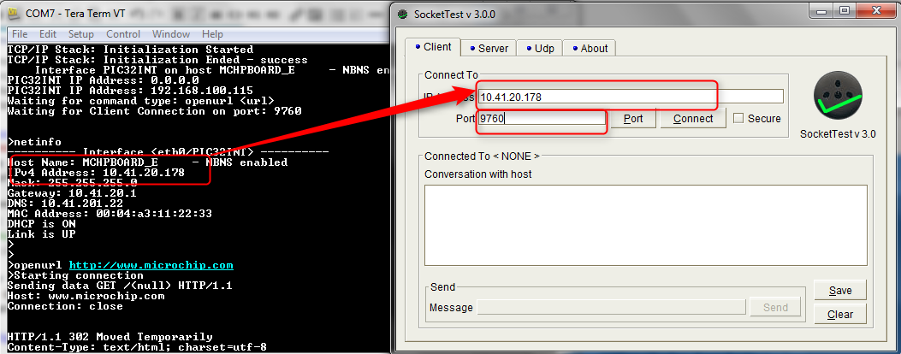
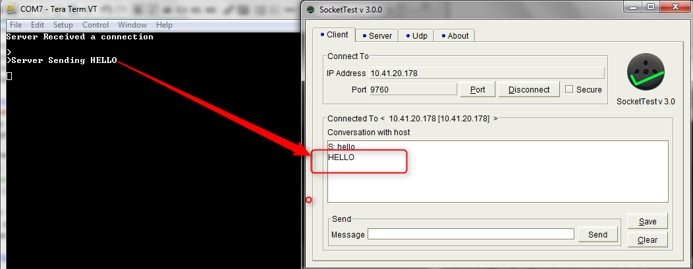

For SAM E70/V71 Xplained Ultra Evaluation Kit
- Configure the Development Board as given here.
- Make the demonstration setup as shown here.
- Build and download the demonstration project on the target board.
- A virtual COM port will be detected on the computer, when the USB cable is connected.
- Open a standard terminal application on the computer (like Hyper-terminal or Tera Term) and configure the virtual COM port.
- Set the serial baud rate to 115200 baud in the terminal application.
- Restart the demonstration by pressing the 'RESET' button on the board.
- See that the initialization prints on the serial port terminal.
- When the DHCP client is enabled in the demonstration, wait for the DHCP server to assign an IP address for the development board. This will be printed on the serial port terminal.

To test TCP Client, input the following command from the serial port: openurl <url> - The <url> argument must be a fully formed URL; for instance,  http://www.microchip.com/
http://www.microchip.com/
After the command is input, the demonstration will make a DNS query. Then it will open a connection to the requested URL and perform a simple HTTP GET command.
The response received from the server will be printed on the terminal application through the serial port.

To test the Server part of the demonstration, the TCP Client application is required to run on the computer (SocketTest, Packet Sender etc). In this demonstration, we use the program, SocketTest (http://sockettest.sourceforge.net/). This demonstration has been tested with SocketTest v3.0.
1. Open the SocketTest software and set the configuration as shown in the following figure.

2. Press the Connect button on the SocketTest software after setting the configuration. The serial terminal indicates that the connection has been established.
3. Type any message in the message box of the SocketTest program, and press the Send button. The Server running on the development board will echo back the message to the SocketTest program.

|
MPLAB Harmony TCP/IP Help
|